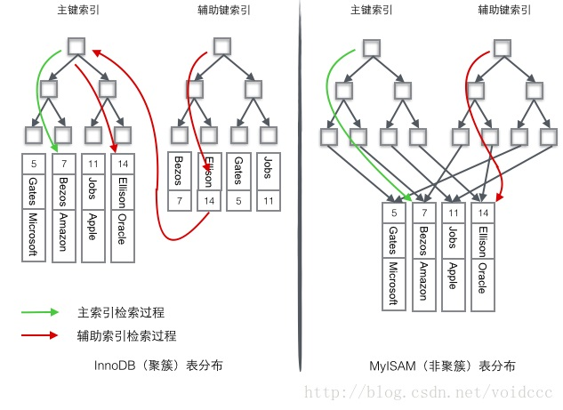

索引-结构 #
索引分类[7] #
| 分类 | 含义 | 特点 | 关键字 |
|---|---|---|---|
| 主键索引 | 针对于表中主键创建的索引 | 默认自动创建，只能有一个 | PRIMARY |
| 唯一索引 | 避免同一个表中某数据列中的值重复 | 可以有多个 | UNIQUE |
| 常规索引 | 快速定位特定数据 | 可以有多个 | |
| 全文索引 | 全文索引查找的是文本中的关键词，而不是比较索引中的值 | 可以有多个 | FULLTEXT |
| 分类 | 含义 | 特点 |
|---|---|---|
| 聚集索引(Clustered Index) | 将数据存储与索引放一块，索引结构的叶子节点保存了行数据 | 必须有，而且只有一个 |
| 二级索引(Secondary Index) | 将数据与索引分开存储，索引结构的叶子节点关联的是对应的主键 | 可以存在多个 |
- 聚集索引选取规则:
- 如果存在主键，主键索引就是聚集索引
- 如果不存在主键，将使用第一个唯一（UNIQUE）索引作为聚集索引。
- 如果表没有主键，或没有合适的唯一索引，则InnoDB会自动生成一个rowid作为隐藏的聚集索 引。
索引结构和存储引擎 [3] #
索引的数据结构： B+树能够很好地配合磁盘的读写特性，减少单次查询的磁盘访问次数

| index | MyISAM | InnoDB | Memory |
|---|---|---|---|
| B-Tree （balanced 平衡的） |
支持 | 支持 | 支持 |
| Hash | 不支持 | 不支持 | 支持 |
| R-Tree 空间索引 |
支持 | 不支持 | 不支持 |
| Full-text | 支持 | 支持 | 不支持 |
复合索引的数据结构 #
create table people {
last_name,
first_name,
dob,
gender,
key(last_name, first_name, dob)
}
索引- 使用 #
索引的使用场景 #
| 索引的使用场景 | 例子 |
|---|---|
| 匹配全值 | index (a,b,c) a=1 and b=2 and c=3 |
| 范围查找 | index a>1 and b<3 |
| 匹配最左前缀 | index(a，b，c) a OR a，b OR a、b、c OR a，c 会使用 b、c 不使用 |
| 仅对索引列进行查询（覆盖索引） | index a a=1 |
| 匹配列前缀 | index （a， b） a like ‘WEER%’ |
| Index Condition Pushdown（ICP） | 减少回表IO |
索引的失效 [12][7] #
-
非复合索引
索引失效(不会使用index的场景) 例子 解释 在索引列上进行运算操作 substring(phone,10,2) 对索引字段做函数操作，可能会破坏索引值的有序性，因此优化器就决定放弃走树搜索功能。 模糊查询, 头部模糊匹配 like “%NI” 字符串类型字段使用时，不加引号[隐式转换] lastname=1 不使用索引
lastname=‘1’ 使用索引隐式类型转换， 隐式字符编码转换，等价于在索引字段上做函数操作而导致了全索引扫描。 or连接条件 index a
a=3 or c=6 or d=9如果or前的条件中的列有索引，而后面的列中没有索引，那么涉及的索引都不会被用到. 当or连接的条件，左右两侧字段都有索引时，索引才会生效。 -
复合索引[7]
- 最左前缀原则 如果索引关联了多列（联合索引），要遵守最左前缀法则，最左前缀法则指的是查询从索引的最左列开始，并且不跳过索引中的列。如果跳跃某一列，索引将部分失效（后面的字段索引失效）。
- 范围查询
联合索引中，出现范围查询(>,<)，范围查询右侧的列索引失效。
explain select * from tb_user where profession = '软件工程' and age >= 30 and status = '0';
索引-优化 #
索引维护 #
页分裂， 性能会受影响， 整体空间利用率降低大约50%。 页合并，页分裂的逆过程。
自增主键 #
自增主键的插入数据模式，正符合了递增插入的场景。每次插入一条 新记录，都是追加操作，都不涉及到挪动其他记录，也不会触发叶子节点的分裂。 而有业务逻辑的字段做主键，则往往不容易保证有序插入，这样写数据成本相对较高。
除了考虑性能外，我们还可以从存储空间的角度来看。假设你的表中确实有一个唯一字段，比如 字符串类型的身份证号，那应该用身份证号做主键，还是用自增字段做主键呢？ 由于每个非主键索引的叶子节点上都是主键的值。如果用身份证号做主键，那么每个二级索引的 叶子节点占用约20个字节，而如果用整型做主键，则只要4个字节，如果是长整型（bigint）则是 8个字节。显然，主键长度越小，普通索引的叶子节点就越小，普通索引占用的空间也就越小。 这样，非主键索引占用的空间最小。
所以，从性能和存储空间方面考量，自增主键往往是更合理的选择。 [自增主键使得索引值是顺序插入的，而不是随机插入的， insert时性能更高。 顺序插入同时也减少了页分裂]
覆盖索引(优化手段) #
如果执行的语句是select ID from T where k between 3 and 5，这时只需要查ID的值，而ID的值 已经在k索引树上了，因此可以直接提供查询结果，不需要回表。也就是说，在这个查询里面， 索引k已经“覆盖了”我们的查询需求，我们称为覆盖索引.
覆盖索引可以减少树的搜索次数，显著提升查询性能，所以使用覆盖索引是一个常用的性能优化手段. [不需要回表， 不需要回到聚集索引里查询]
索引下推 ICP [14] #
索引-性能分析[7] #
查看执行频次 #
SHOW GLOBAL STATUS LIKE 'Com_______';
慢查询日志 #
show profiles #
## 查看每一条SQL的耗时情况:
mysql> show profiles;
explain #

- type：表示连接类型，性能由好到差的连接类型为 NULL、system、const、eq_ref、ref、range、index、all
- possible_key：可能应用在这张表上的索引，一个或多个
- Key：实际使用的索引，如果为 NULL，则没有使用索引
- Key_len：表示索引中使用的字节数，该值为索引字段最大可能长度，并非实际使用长度，在不损失精确性的前提下，长度越短越好
- rows：MySQL认为必须要执行的行数，在InnoDB引擎的表中，是一个估计值，可能并不总是准确的
参考 #
-
《深入浅出MySQL：数据库开发、优化与管理维护》
-
xxx
-
剖析Mysql的InnoDB索引 ***
-
黑马程序员 MySQL数据库入门到精通 P75-P82 P72 mysql_note 笔记1 MySQL 索引 笔记2
-
xxx
-
《MySQL实战45讲 - 深入浅出索引（上）》 丁奇
-
《MySQL实战45讲 - 深入浅出索引（下）》 丁奇
-
《Java性能调优实战 - 34 | MySQL调优之索引：索引的失效与优化》 刘超 还要再整理
-
B+树索引并不能直接找到行，只是找到行所在的页，通过把整页读入内存，再在内存中查找。 聚集索引的存储在物理上并不是连续的，每个数据页在不同的磁盘块，通过一个双向链表来进行连接。
-
MySQL索引原理及慢查询优化 美团 未 ***
-
业界难题-“跨库分页”的四种方案 58沈剑 未